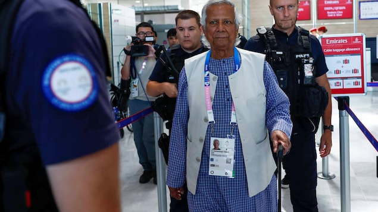
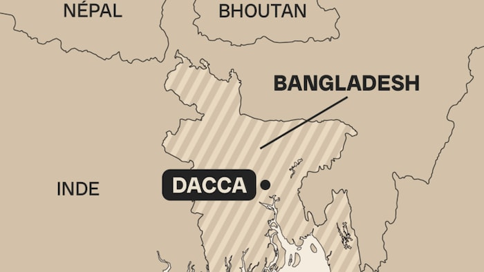

诺贝尔和平奖得主尤努斯（Muhammad Yunus）抵达法国戴高乐机场。
照片：Reuters / Gonzalo Fuentes
RCI
孟加拉即将上任的临时领导人、诺贝尔和平奖得主尤努斯（Muhammad Yunus）要求孟加拉人民保持冷静，准备好在数周暴力事件后重建国家。
在孟加拉近月接续示威造成数百人死亡后，前总理哈西娜（Sheikh Hasina）被迫下台，日前逃往邻国印度。
在获军队和学生组织学生反对歧视联合会
（Collectif Students Against Discrimination）的领袖同意后，诺贝尔和平奖获奖者尤努斯被任命为临时政府领导人。他还呼吁学生、政党成员和其他人保持冷静。
孟加拉军方首脑周三表示，尤努斯将从巴黎返回，领导临时政府并在周四晚宣誓就职，以恢复国家稳定。
扎曼（Waker-Uz-Zaman）将军表示，希望尤努斯能将局势带入美好的民主
进程。

孟加拉（Bangladesh）邻近印度（Inde）、尼卜尔（Népal )和不丹 （Bhoutan）。
照片：Radio-Canada / Émile Lord-Ayotte
自周一哈西娜（Sheikh Hasina）逃往印度后，就发生了针对其支持者、警察和少数民族社区的暴力事件，一天之内多达122人丧生，令整场运动死亡人数至少达到 432 人。但周二街道回复平静。扎曼表示，将追究暴力责任。
2006 年诺贝尔和平奖得主
尤努斯在巴黎向记者表示，期待回国看看那里发生了什么，以及我们如何组织起来，摆脱目前的困境。
当被问及何时举行选举时，他举起双手，似乎表示言之尚早。我得去和他们谈谈。我对整个局面还很陌生。
84岁的尤努斯是一位经济学家和银行家。他在1983年创立了格莱珉银行（Grameen Bank），向那些没有资格获得普通银行贷款的商人提供小额贷款，帮助了成千上万的人摆脱贫困。这令他荣获2006年诺贝尔和平奖。
尤努斯在谈到哈西娜辞职后发生的暴力行为时说， 暴力是我们的敌人。请不要制造更多的敌人。请保持冷静，为建设国家做好准备
。
前总理：”不要报复＂
病重的反对党领袖、前总理齐亚（Khaleda Zia）周三在病榻上发表讲话，敦促大众不要走上毁灭孟加拉的路。这是她自2018年被判贪污罪入狱以来的首次公开演讲。
前总理齐亚（Khaleda Zia）2014年的资料图片。
照片：Reuters / Andrew Biraj
不要破坏，不要愤怒，也不要报复，我们需要爱与和平来重建我们的国家
，齐亚在首都达卡（Dacca）一次集会上，通过视频连线对支持者说。
齐亚曾于2001至2006年统治孟加拉，2018年被判贪污罪成被判处17年监禁。患病的她一直被关押在家中软禁，日前获释。
The Associated Press, adaptation en chinois par Donna Chan.
文章来源于RCI:诺贝尔和平奖获獎者任孟加拉临时领导人